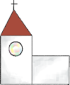
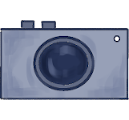
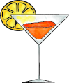
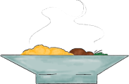
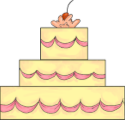
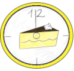

Daqui a ? dias
O dia especial da Evelin e do Ricardo!
2 Julho 2022 — Piliscsaba, Húngria
Cronologia
 14h30 Encontro na igreja
16h00 Fotos 
 17h00 Bebidas e aperitivos
18h30 Jantar 
20h00 Primeira dança
22h00 Bolo 
23h30 Dança com a noiva
 24h00 Ceia da meia-noite
04h52 Nascer-do-sól
Onde raio é isto?
Piliscsaba
Piliscsaba (pronunciada Pi-lis-tcha-ba) é uma vila perto de Budapeste, na Húngria, localizada num vale entre os montes florestados de Buda e Pilis.
Acolhe 8.391 habitantes, dos quais cerca de 5% pertencem à família Schmidt (lado da noiva). Mantém isso em mente quando cumprimentares os locais.
🚂 Chegar de comboio: Partem comboios da Estação de Nyugati em Budapeste, a cada meia hora. Recomendamos apanhar o comboio das 13h21 ou, o mais tardar, das 13h51 que chegam às 14h00 ou 14h30 à estação de Piliscsaba.
🚗 Chegar de carro: A estrada 10 liga Piliscsaba a Budapeste. A viagem de 25 km dura cerca de meia hora, dependendo do tráfego.
Cerimónia
💒 A cerimónia do casamento terá lugar na caprichosa Igreja Calvinista de Piliscsaba (se tiveres curiosidade, podes encontrar aqui a página da Wikipédia do Sr. João Calvino, que não estará presente).
A estação de combóio encontra-se a menos de 1 km (menos de 15-minutos a pé). Existem lugares de estacionamento na igreja ou nas ruas envolventes.
🕑 Pedimos gentilmente que nos encontremos às 14h30 em frente à igreja. A cerimónia começará às 15h00.
Copo-de-água
🍹 O copo-de-água terá lugar no Tovabbjutas (pronounced tô-vábe-iú-tás), localizado a 1.5 kms da igreja (25-minutos a pé). Transporte será organizado a partir da igreja (por favor confirma no formulário de registo em baixo!). Existem lugares de estacionamento no local.
Mapa
Onde dormir?
🏨 Se quiseres ficar perto de nós em Piliscsaba, podes encontrar informação atual neste documento. Temos vários lugares pré-registados para as datas à volta do casamento. Por favor, diz-nos se quiseres ficar nalgum destes locais, quando preencheres o formulário de registo em baixo.
Expetativas de presentes
Como podes ver pela nossa cronologia (se clicaste no butão), nós já vivemos juntos há muito tempo. Por isto, já armazenamos tudo o que poderiamos precisar para a nossa casa. Pedimos gentilmente, que não nos deem presentes físicos.
A tua presença é o melhor presente que nos podes dar!
E esse Covid?
Não sabemos como estará! Queremos que o evento seja seguro para toda a gente.
Todos nós e família próxima estão vacinados.
Pedimos a todos os convidados que estejam vacinados, de forma a proteger os mais vulneráveis.
Quero registar-me!
Por favor preenche este formulário o mais brevemente possível (até ao primeiro de Maio), para nos ajudar a organizar tudo a tempo.